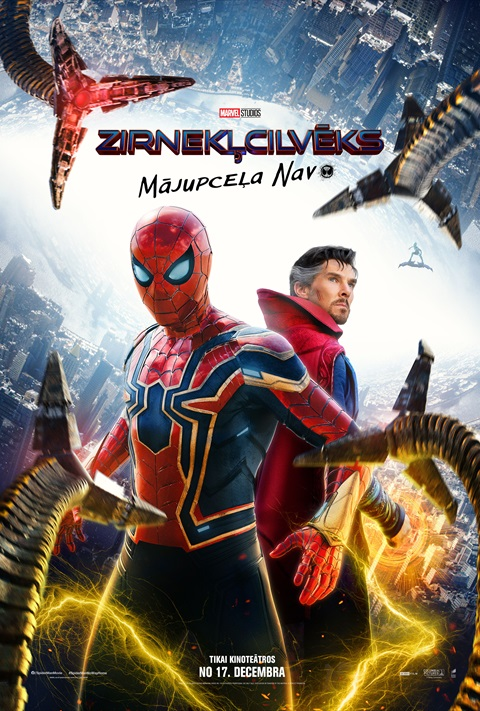
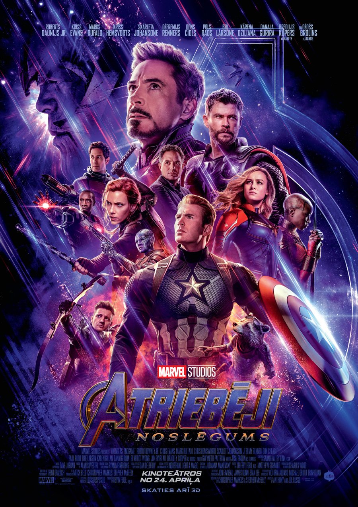
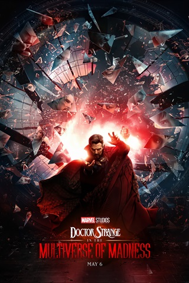

Tors Ragnaroks
Tors Ragnaroks
"Tors Ragnarjoks" ir 2017. gada amerikāņu supervaroņu filma, kuras režisors ir Taika Vaititi. Filma ir balstīta uz Marvel komikss tāda paša nosaukuma tēlu. Filma ir turpinājums 2011. gada filmai "Tors" un 2013. gada filmai "Tors: Tumsas karaļvalsts". Šī ir MCU septiņpadsmitā daļa. Galvenās lomas filmā atveido Kriss Hemsvorts, Tesa Tompsone, Toms Hidlstons, Entonijs Hopkinss, Idriss Elba, Keita Blanšeta, Marks Rafalo un Džefs Goldblūms. Filmas pirmizrāde notika 2017. gada 10. oktobrī Holivudā. Filmā Tors cenšas izkļūt no svešas planētas Sakāras un apturēt savu māsu Helu, pirms viņa iznīcina Asgardu.
 Zirnekļcilvēks "Mājupceļa nav""Zirnekļcilvēks Mājupceļa nav" ir 2021. gada ASV supervaroņu filma par Marvel Comics tēlu Zirnekļcilvēku, ko veidojušas studijas Columbia Pictures un Marvel Studios, bet izplata Sony Pictures Releasing. Šī ir filmu "Zirnekļcilvēks: Atgriešanās mājās" un "Zirnekļcilvēks: Tālu no mājām" tiešs turpinājums un 27 filma MCU filmu sērijā. Filmas režisors ir Džo Votss, scenārija autori Kriss Makena un Ēriks Somerss. Galveno lomu, Zirnekļcilvēku, atveido Toms Holands, bet pārējās lomas atveido Zendaja, Benedikts Kamberbačs, Džeikobs Batalons, Džons Favro, Marisa Tomeja, J. B. Smūvs, Benedikts Vongs, Džeimijs Fokss, Alfreds Molina, Vilems Defo, Tomass Heidens Čērčs, Tobijs Magvairs un Endrū Gārfīlds. Filmā Pārkers lūdz Doktoram Stīvenam Strendžam (Kamberbačs) izmantot maģiju, lai Zirnekļcilvēka identitāti atkal padarītu slepenu pēc tās publiskās atklāšanas filmas "
 Atriebēji "Noslēgums""Atriebēji: Noslēgums" ir 2019. gada ASV supervaroņu filma, kas balstīta uz Marvel Comics supervaroņu komandas Atriebēji piedzīvojumiem. Filmu producē Marvel Studios un izplata Walt Disney Studios Motion Pictures. Tas ir tiešs turpinājums 2018. gada filmai "Atriebēji: Bezgalības karš", kā arī turpinājums 2012. gada filmai "Atriebēji" un 2015. gada filmai "Atriebēji: Ultrona laikmets", kā arī 22. filma Marvel Cinematic Universe visumā. Filmas režisori ir Entonijs un Džo Russo, scenārija autori Kristofers Markuss un Stīvens Makfīlijs. Galvenās lomas atveido Roberts Daunijs jaunākais, Kriss Evanss, Marks Rafalo, Kriss Hemsvorts, Skārleta Johansone, Džeremijs Renners, Dons Čīdls, Pols Rads, Bri Lārsone, Karena Gillana, Danai Gurira, Bredlijs Kūpers un Džošs Brolins. Filmā izdzīvojušie Atriebēju komandas locekļi un to sabiedrotie cīnās ar sekām, kas palikušas pēc Tanosa "Bezgal
 Doktors Streindžs ''Neprāta multivisumāDokotrs Streindžš "Neprāta multivisums" ir 2022. gada amerikāņu supervaroņu filma, kuras pamatā ir Marvel komiksi un kurā piedalās varonis Doktors Streindžs. Doktors Stīvens Streindžs izdara aizliegtu burvestību, kas paver durvis uz multiversu, tostarp alternatīvām viņa paša versijām, kuras draudi cilvēcei ir pārāk lieli Streindža, Vonga un Vandas Maksimofas apvienotajiem spēkiem.